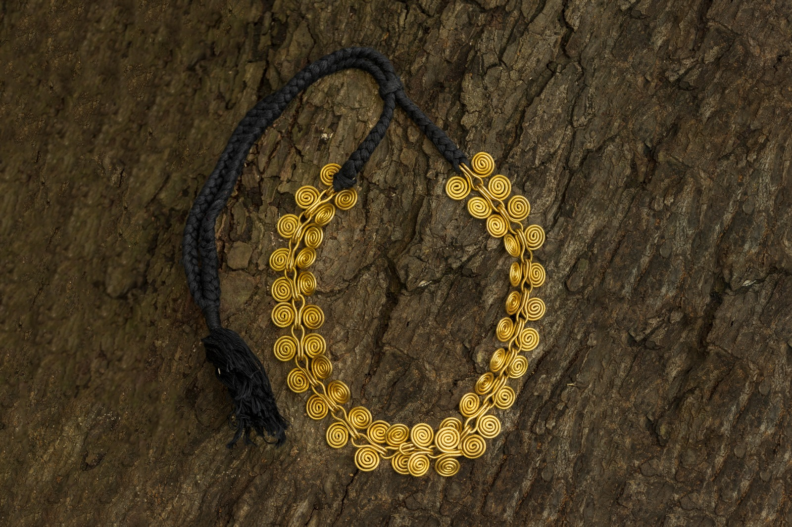
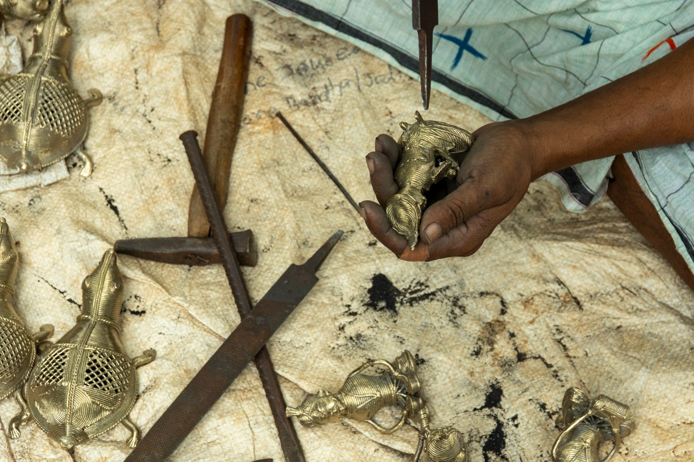
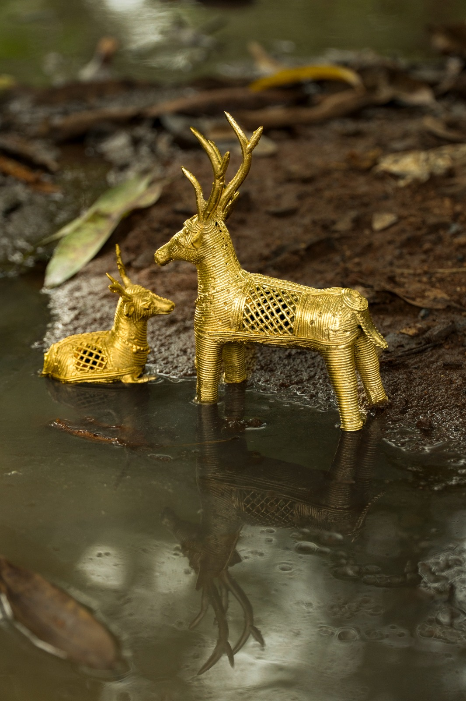
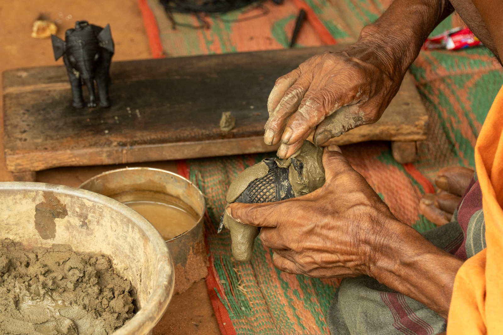
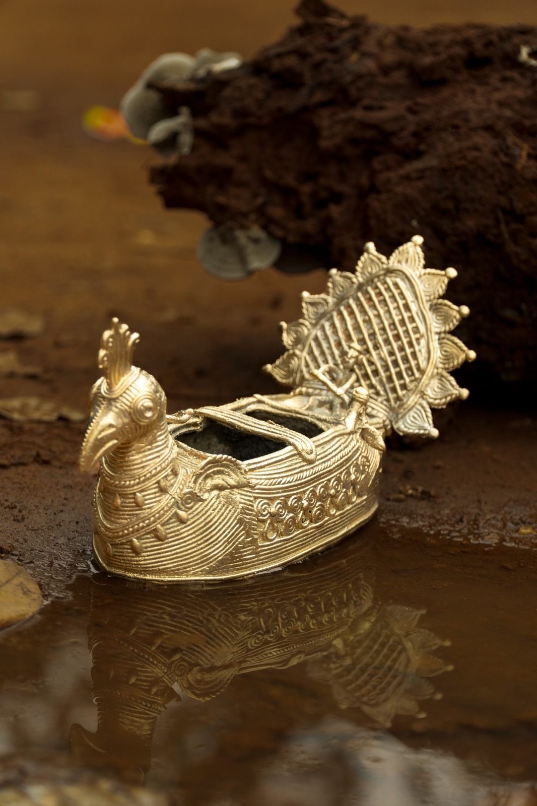

Dhokra is one of India's oldest metal craft traditions, created using the intricate lost-wax casting technique practised for over 4,000 years. Traditionally shared by tribal artisan communities of Odisha, Chhattisgarh, and West Bengal, the craft is known for its earthy brass textures, primitive forms, and detailed handwork inspired by folklore, rituals, and nature. Each piece is individually moulded, making no two creations exactly alike. Despite modern industrialisation, Dhokra continues to survive through generations of artisans who preserve its cultural identity and handmade essence through slow, mindful craftsmanship.
Despite its rich heritage, Dhokra craft faces dwindling viability and reduced support in today's industrialised market. Many artisans struggle to preserve their traditional practices and reach contemporary audiences. AAKAAR aims to bridge this gap by connecting artisans with modern collectors through storytelling, cultural awareness, and conscious craft promotion.
The design is first shaped carefully using natural wax. Every pattern and detail is handcrafted with precision and patience.
Layers of clay are applied around the wax mould by hand. The mould is then dried slowly to prepare it for casting.
Molten brass is poured into the mould using traditional techniques. The heat transforms the handcrafted form into solid metal.
The final piece is polished and detailed to reveal its unique form. Each creation carries subtle imperfections that make it one of a kind.




The Craft Community celebrates the people, stories, and traditions that keep handmade heritage alive across generations. AAKAAR creates a space where artisans and collectors come together with purpose and appreciation.
